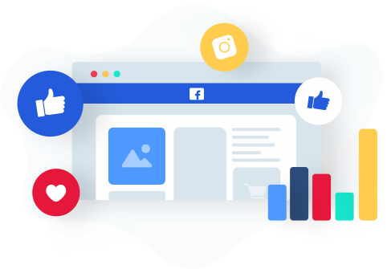

American Marketing Authors, Philip Kotler, and Gary Armstrong define marketing as a “Social Process”. Kolter believes that marketing is ‘The science and art of exploring, creating and delivering value to satisfy the needs of a target market.' Therefore the key to marketing is the communication process to connect with your target consumers. Enhancing the consumer's well being through determining their needs and wants, in order to achieve the most effective results. To emphasise how various marketing platforms work in the world of digital advertising, I will use research I have undertaken to help define and explain various marketing concepts and their some of their comparative strengths and weaknesses. Beginning with clarifying what traditional marketing and digital marketing are, as both methods are different.
In today's world, marketing and advertising have taken a different approach, with a lot of companies and businesses benefiting from the digital world. Traditional marketing is a long-standing marketing method which refers to the well-known methods of advertising, used since the beginning with marketing traders in society. It is primarily made up of printed advertisements in magazines, newspapers, flyers, billboards, and Mail. Along with advertisements on Television and radio. This method enables businesses to reach their local target audience. For example, local businesses will send flyers in the mail to specific households within a city. This will provide target consumers with a keepsake which they can browse through as much as they wish. Sometimes local radio stations will only play ads that are subjected to your city or region. This form of strategic marketing is easily understood by most people because they have been exposed to this form of marketing for a long time, therefore, they can relate to it.
However, there is a major downside to traditional marketing, especially in this day and age. It is very difficult to interact and connect with your target audience. With traditional marketing, customers have to either contact or physically approach a business in order to purchase goods or services which can be quite unreliable for businesses. Another negative to this form of marketing is that it can also be very costly. Printing materials are quite expensive along with the requirement to hire people to distribute them. There is no way to record data and results from this style of marketing meaning it cannot be easily measured, this is impossible for businesses to know if their advertising is impacting on their business or not.
Every day the world becomes more and more digital. It may come to no surprise that nearly all companies have changed their methods of traditional marketing and are now using the power of digital technology to exploit their products. This method of marketing is referred to as digital marketing. The benefits of digital marketing are what is incising companies to change to this method. The ratio of traditional marketing to digital marketing is approximately 80:20 and could also be 90:10 in some other industries. Companies have spawned to this new form of digital marketing through creating websites, digital branding services, and search engine optimisation (SEO) to promote products. According to CJG Digital marketing by using digital advertising companies will be able to generate leads by reaching out to their desired target audiences, which could achieve up to 24% increase in conversion rates. Therefore it’s extremely important to have a well-maintained website with quality content along with targeting the needs of your chosen consumer adds value to your business.
Digital marketing allows businesses and companies to target local audiences but also a global audience. This is due to the fact that digital advertising enables companies to tailor their marketing campaigns to various countries and regions. It can also be tailored to specific demographics such as age, gender, interests, and locations. `I believe that all businesses should alter their digital marketing campaigns to suit their target audience. As a result, this would be ultimately more effective for your business because you are personalising and altering marketing campaigns to suit your target audiences needs and wants. I believe that by making consumer experiences as one to one as possible is an important aspect in digital marketing.
“if you are looking for a way to grow your business's brand without spending a lot of time, I recommend that you start with social media sites like Twitter and Facebook."- Neil Patel
Social Media is a majorly successful tool for digital marketers. By utilising social media channels like Facebook, YouTube, Twitter and Instagram provide an effective way to get businesses recognised. During my research, I discovered that around 89% of marketers confirmed that by using Social Media alone has generated more exposure for their business. There are plenty of social media metrics which provide important information for businesses regarding audience engagement levels, through clicks, shares, comments, and likes. It also supports a global platform to reach a greater audience, which in turn will promote a business's products and services on a much larger and more instant scale.
The use of digital insight tools such as google analytics and social media channels, enable businesses to record data and results quick and easy, providing the ability to really understand how effective a digital campaign has been. Research shows that 93% of all website traffics is directed by search engines. This enables companies to instantly see what is or not working in their online marketing campaigns. Therefore, by using these insight tools, businesses can adapt very quickly to improve results whilst gaining knowledge to utilise future campaigns.
Over the past decade, there has been a dramatic increase in online marketing. So when it comes to making the decision as to which form has the definite edge, overall I personally believe that digital marketing has a clear advantage. As technology evolves the digital marketing world evolves with it. More and more individuals are using the web to complete daily tasks, make purchases and seek out services, which makes it vital for businesses and companies to adapt to advertising digitally if they want to make the most from their marketing strategies. The more people know about your brand or the products you sell the better. By gaining that kind of exposure to digital marketing will ultimately change your business for the best.